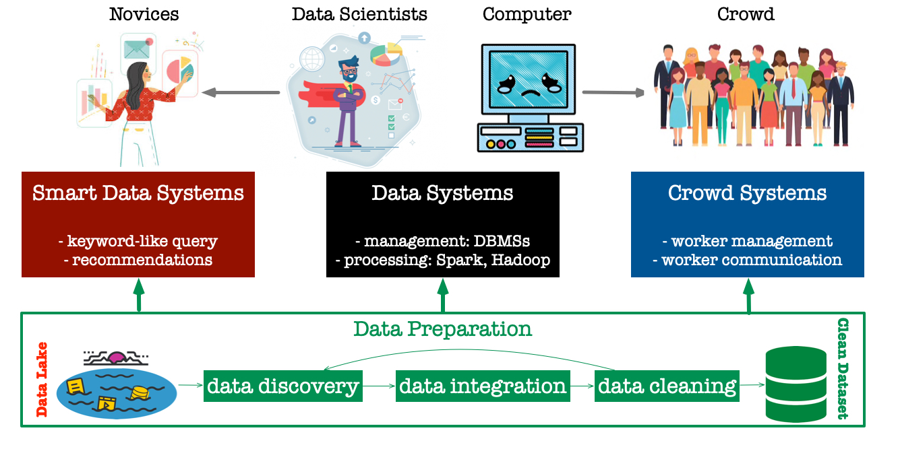

Research Interests and Projects
My research interests are best characterized by the figure below. Without a shadow of a doubt, data systems play a critical role in managing, processing, and analyzing big data. However, when using such data systems on different applications, a typical feedback from real users is that they are not good enough. My current research interests are to address three main pain points for real users.
Data Preparation
It solves the problem of discovering the datasets of interests, integrating discovered data from heterogeneous sources, and cleaning the data. This data preparation phase typically needs 80% of the time of data scientists in large organizations.
Smart Data Systems
Data systems are designed for well trained data scientists or data engineers to use. Smart data systems are designed for novices, such that they can use natural language style search and simple clicks to conduct data analytics.
Crowd Systems
Data systems are to manage machines, while crowd systems are to manage humans. Although there are many general purpose crowdsourcing platforms such as Amazon Mechanic Turk and Figure Eight, they are hard to customize and optimize for ad-hoc applications. For example, Rayyan QCRI was built from scratch for collaborative Systematic Reviews with more than 40K+ registered users. Hence, there is an emergent need for crowd systems that are general, extensible, and optimizable.
